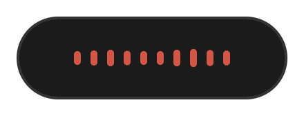
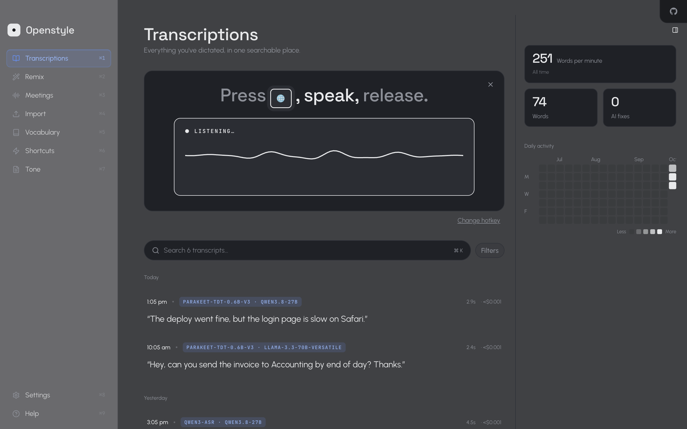
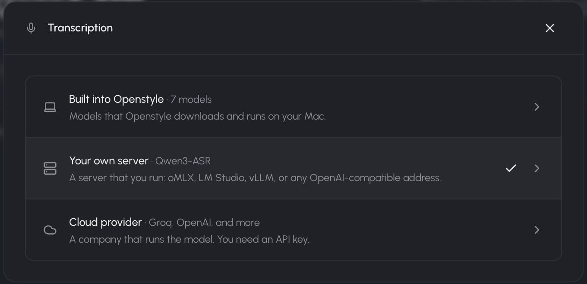
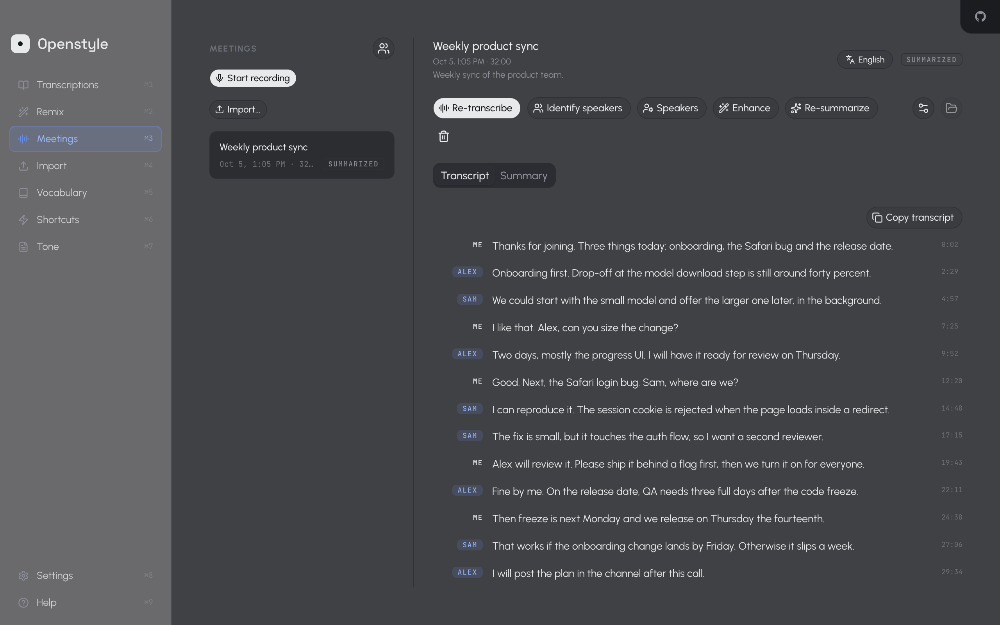
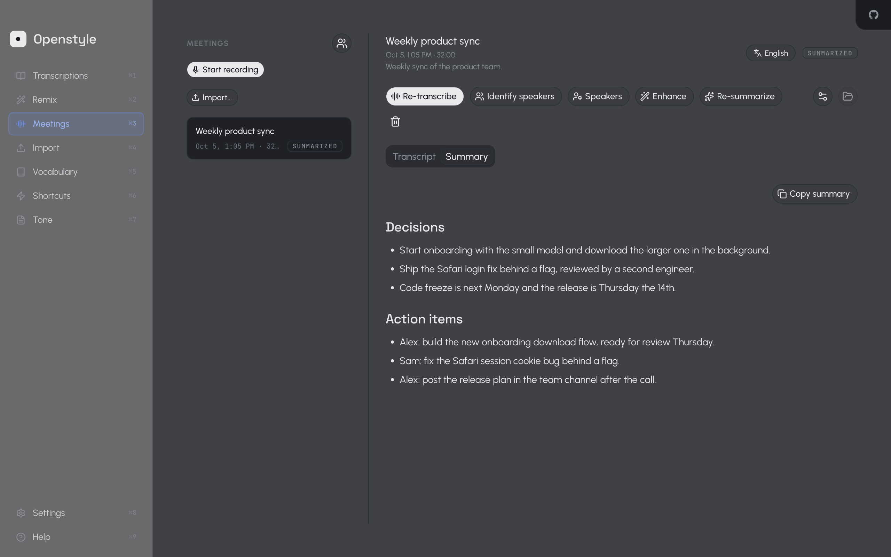

Speak anywhere on your Mac. Get clean text.
Hold a key, talk, let go. Openstyle turns what you said into clean text in the app you are using.
Local Flexible Simple Free Open source
The deploy went fine, but the login page is slow on Safari.

Simple: hold, talk, let go

- Hold your shortcut
- Talk
- Let go
Flexible: you choose where your voice goes
Built into Openstyle
Stays on your Mac
Models run on your Mac with MLX: Parakeet, Qwen3-ASR, Whisper. Add more from Hugging Face.
Your own server
Your network
Use oMLX, LM Studio or any OpenAI-compatible server you run.
Cloud provider
Your API key
Use OpenAI, Groq, Deepgram, ElevenLabs and others with your own key.

Meetings: record now, read later
Openstyle records your meetings, transcribes them after the call and writes a summary.


Free and open source
Openstyle is free to download. The code is on GitHub under the MIT license. View the code on GitHub
More than dictation
-
Remix
Rewrite text with a prompt
-
Meetings
Record, transcribe and summarize meetings
-
Import
Transcribe audio files
-
Vocabulary
Teach it your names and terms
-
Tone
Set how the cleaned text sounds
-
Transcriptions
Find anything you said
Local and fast
In our tests on an idle Apple silicon Mac, Parakeet transcribed a 3-minute recording in under a second.
Measured October 2026 with Openstyle 2.10, warm model.
Frequently asked questions
Does my audio leave my Mac?
Not with a built-in model. With your own server it goes to that server. With a cloud provider it goes to that provider.
Which Macs are supported?
Openstyle runs on Macs with Apple silicon. The published builds are for arm64 only.
How do updates work?
Openstyle checks for updates and downloads them in the background. You choose when to restart.